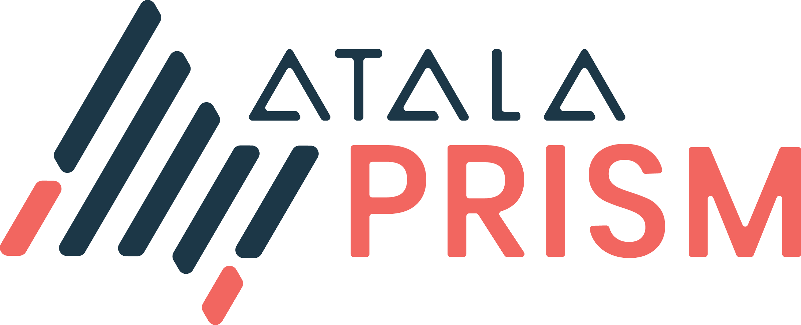

DIDComm

Implementation of the Peer DID method specification in Kotlin MultiPlatform with support for the following targets:
JS
iOS
Android
JVM
This implementation is a re-implementation of this repo but for Kotlin Multiplatform
Example
Example code:
val encryptionKeys = listOf(
VerificationMaterialAgreement(
type = VerificationMethodTypeAgreement.X25519_KEY_AGREEMENT_KEY_2019,
format = VerificationMaterialFormatPeerDID.BASE58,
value = "DmgBSHMqaZiYqwNMEJJuxWzsGGC8jUYADrfSdBrC6L8s",
)
)
val signingKeys = listOf(
VerificationMaterialAuthentication(
type = VerificationMethodTypeAuthentication.ED25519_VERIFICATION_KEY_2018,
format = VerificationMaterialFormatPeerDID.BASE58,
value = "ByHnpUCFb1vAfh9CFZ8ZkmUZguURW8nSw889hy6rD8L7",
)
)
val service =
"""
{
"type": "DIDCommMessaging",
"serviceEndpoint": "https://example.com/endpoint1",
"routingKeys": ["did:example:somemediator#somekey1"],
"accept": ["didcomm/v2", "didcomm/aip2;env=rfc587"]
}
"""
val peerDIDAlgo0 = createPeerDIDNumalgo0(signingKeys[0])
val peerDIDAlgo2 = createPeerDIDNumalgo2(
encryptionKeys, signingKeys, service
)
val didDocAlgo0Json = resolvePeerDID(peerDIDAlgo0)
val didDocAlgo2Json = resolvePeerDID(peerDIDAlgo2)
val didDocAlgo0 = DIDDocPeerDID.fromJson(didDocAlgo0Json)
val didDocAlgo2 = DIDDocPeerDID.fromJson(didDocAlgo2Json)Example of DID documents:
DIDDoc algo 0:
{
"id": "did:peer:0z6MkqRYqQiSgvZQdnBytw86Qbs2ZWUkGv22od935YF4s8M7V",
"authentication": [
{
"id": "did:peer:0z6MkqRYqQiSgvZQdnBytw86Qbs2ZWUkGv22od935YF4s8M7V#6MkqRYqQiSgvZQdnBytw86Qbs2ZWUkGv22od935YF4s8M7V",
"type": "Ed25519VerificationKey2020",
"controller": "did:peer:0z6MkqRYqQiSgvZQdnBytw86Qbs2ZWUkGv22od935YF4s8M7V",
"publicKeyMultibase": "ByHnpUCFb1vAfh9CFZ8ZkmUZguURW8nSw889hy6rD8L7"
}
]
}did_doc_algo_2
{
"id": "did:peer:2.Ez6LSbysY2xFMRpGMhb7tFTLMpeuPRaqaWM1yECx2AtzE3KCc.Vz6MkqRYqQiSgvZQdnBytw86Qbs2ZWUkGv22od935YF4s8M7V.Vz6MkgoLTnTypo3tDRwCkZXSccTPHRLhF4ZnjhueYAFpEX6vg.SeyJ0IjoiZG0iLCJzIjoiaHR0cHM6Ly9leGFtcGxlLmNvbS9lbmRwb2ludCIsInIiOlsiZGlkOmV4YW1wbGU6c29tZW1lZGlhdG9yI3NvbWVrZXkiXSwiYSI6WyJkaWRjb21tL3YyIiwiZGlkY29tbS9haXAyO2Vudj1yZmM1ODciXX0",
"authentication": [
{
"id": "did:peer:2.Ez6LSbysY2xFMRpGMhb7tFTLMpeuPRaqaWM1yECx2AtzE3KCc.Vz6MkqRYqQiSgvZQdnBytw86Qbs2ZWUkGv22od935YF4s8M7V.Vz6MkgoLTnTypo3tDRwCkZXSccTPHRLhF4ZnjhueYAFpEX6vg.SeyJ0IjoiZG0iLCJzIjoiaHR0cHM6Ly9leGFtcGxlLmNvbS9lbmRwb2ludCIsInIiOlsiZGlkOmV4YW1wbGU6c29tZW1lZGlhdG9yI3NvbWVrZXkiXSwiYSI6WyJkaWRjb21tL3YyIiwiZGlkY29tbS9haXAyO2Vudj1yZmM1ODciXX0#6MkqRYqQiSgvZQdnBytw86Qbs2ZWUkGv22od935YF4s8M7V",
"type": "Ed25519VerificationKey2020",
"controller": "did:peer:2.Ez6LSbysY2xFMRpGMhb7tFTLMpeuPRaqaWM1yECx2AtzE3KCc.Vz6MkqRYqQiSgvZQdnBytw86Qbs2ZWUkGv22od935YF4s8M7V.Vz6MkgoLTnTypo3tDRwCkZXSccTPHRLhF4ZnjhueYAFpEX6vg.SeyJ0IjoiZG0iLCJzIjoiaHR0cHM6Ly9leGFtcGxlLmNvbS9lbmRwb2ludCIsInIiOlsiZGlkOmV4YW1wbGU6c29tZW1lZGlhdG9yI3NvbWVrZXkiXSwiYSI6WyJkaWRjb21tL3YyIiwiZGlkY29tbS9haXAyO2Vudj1yZmM1ODciXX0",
"publicKeyMultibase": "z6MkqRYqQiSgvZQdnBytw86Qbs2ZWUkGv22od935YF4s8M7V"
},
{
"id": "did:peer:2.Ez6LSbysY2xFMRpGMhb7tFTLMpeuPRaqaWM1yECx2AtzE3KCc.Vz6MkqRYqQiSgvZQdnBytw86Qbs2ZWUkGv22od935YF4s8M7V.Vz6MkgoLTnTypo3tDRwCkZXSccTPHRLhF4ZnjhueYAFpEX6vg.SeyJ0IjoiZG0iLCJzIjoiaHR0cHM6Ly9leGFtcGxlLmNvbS9lbmRwb2ludCIsInIiOlsiZGlkOmV4YW1wbGU6c29tZW1lZGlhdG9yI3NvbWVrZXkiXSwiYSI6WyJkaWRjb21tL3YyIiwiZGlkY29tbS9haXAyO2Vudj1yZmM1ODciXX0#6MkgoLTnTypo3tDRwCkZXSccTPHRLhF4ZnjhueYAFpEX6vg",
"type": "Ed25519VerificationKey2020",
"controller": "did:peer:2.Ez6LSbysY2xFMRpGMhb7tFTLMpeuPRaqaWM1yECx2AtzE3KCc.Vz6MkqRYqQiSgvZQdnBytw86Qbs2ZWUkGv22od935YF4s8M7V.Vz6MkgoLTnTypo3tDRwCkZXSccTPHRLhF4ZnjhueYAFpEX6vg.SeyJ0IjoiZG0iLCJzIjoiaHR0cHM6Ly9leGFtcGxlLmNvbS9lbmRwb2ludCIsInIiOlsiZGlkOmV4YW1wbGU6c29tZW1lZGlhdG9yI3NvbWVrZXkiXSwiYSI6WyJkaWRjb21tL3YyIiwiZGlkY29tbS9haXAyO2Vudj1yZmM1ODciXX0",
"publicKeyMultibase": "z6MkgoLTnTypo3tDRwCkZXSccTPHRLhF4ZnjhueYAFpEX6vg"
}
],
"keyAgreement": [
{
"id": "did:peer:2.Ez6LSbysY2xFMRpGMhb7tFTLMpeuPRaqaWM1yECx2AtzE3KCc.Vz6MkqRYqQiSgvZQdnBytw86Qbs2ZWUkGv22od935YF4s8M7V.Vz6MkgoLTnTypo3tDRwCkZXSccTPHRLhF4ZnjhueYAFpEX6vg.SeyJ0IjoiZG0iLCJzIjoiaHR0cHM6Ly9leGFtcGxlLmNvbS9lbmRwb2ludCIsInIiOlsiZGlkOmV4YW1wbGU6c29tZW1lZGlhdG9yI3NvbWVrZXkiXSwiYSI6WyJkaWRjb21tL3YyIiwiZGlkY29tbS9haXAyO2Vudj1yZmM1ODciXX0#6LSbysY2xFMRpGMhb7tFTLMpeuPRaqaWM1yECx2AtzE3KCc",
"type": "X25519KeyAgreementKey2020",
"controller": "did:peer:2.Ez6LSbysY2xFMRpGMhb7tFTLMpeuPRaqaWM1yECx2AtzE3KCc.Vz6MkqRYqQiSgvZQdnBytw86Qbs2ZWUkGv22od935YF4s8M7V.Vz6MkgoLTnTypo3tDRwCkZXSccTPHRLhF4ZnjhueYAFpEX6vg.SeyJ0IjoiZG0iLCJzIjoiaHR0cHM6Ly9leGFtcGxlLmNvbS9lbmRwb2ludCIsInIiOlsiZGlkOmV4YW1wbGU6c29tZW1lZGlhdG9yI3NvbWVrZXkiXSwiYSI6WyJkaWRjb21tL3YyIiwiZGlkY29tbS9haXAyO2Vudj1yZmM1ODciXX0",
"publicKeyMultibase": "z6LSbysY2xFMRpGMhb7tFTLMpeuPRaqaWM1yECx2AtzE3KCc"
}
],
"service": [
{
"id": "did:peer:2.Ez6LSbysY2xFMRpGMhb7tFTLMpeuPRaqaWM1yECx2AtzE3KCc.Vz6MkqRYqQiSgvZQdnBytw86Qbs2ZWUkGv22od935YF4s8M7V.Vz6MkgoLTnTypo3tDRwCkZXSccTPHRLhF4ZnjhueYAFpEX6vg.SeyJ0IjoiZG0iLCJzIjoiaHR0cHM6Ly9leGFtcGxlLmNvbS9lbmRwb2ludCIsInIiOlsiZGlkOmV4YW1wbGU6c29tZW1lZGlhdG9yI3NvbWVrZXkiXSwiYSI6WyJkaWRjb21tL3YyIiwiZGlkY29tbS9haXAyO2Vudj1yZmM1ODciXX0#didcommmessaging-0",
"type": "DIDCommMessaging",
"serviceEndpoint": "https://example.com/endpoint",
"routingKeys": [
"did:example:somemediator#somekey"
],
"accept": [
"didcomm/v2", "didcomm/aip2;env=rfc587"
]
}
]
}Assumptions and limitations
Only static layers 1, 2a, 2b are supported
Only
X25519keys are support for key agreementOnly
Ed25519keys are support for authenticationSupported verification materials (input and in the resolved DID DOC):
Default 2020 verification materials (
Ed25519VerificationKey2020andX25519KeyAgreementKey2020) with multibase base58 (publicKeyMultibase) public key encoding.JWK (
JsonWebKey2020) using JWK (publicKeyJwk) public key encoding2018/2019 verification materials (
Ed25519VerificationKey2018andX25519KeyAgreementKey2019) using base58 (publicKeyBase58) public key encoding.